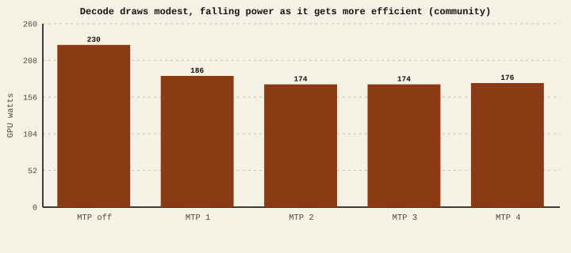
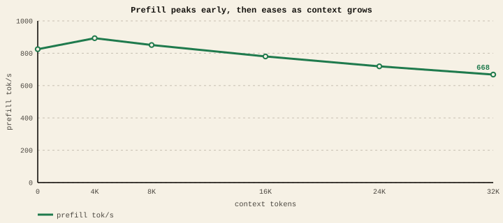

The short version
- Prefill = compute-bound. It scales with the GPU's clock and power budget. A faster or higher-power card reads your prompt faster.
- Decode = memory-bandwidth-bound. It's waiting on memory, not math, so raising the clock does little. This is why decode draws less power than prefill.
- To speed up prefill: more compute / clock / power headroom.
- To speed up decode: more memory bandwidth, a smaller model, or a speculative trick that does more per memory read.
Two phases, two bottlenecks
Prefill reads your whole prompt in parallel — thousands of multiply-adds firing at once. The GPU's arithmetic units are the limit, so prefill behaves like a classic compute benchmark: give it more clock and more power and it goes faster.
Decode is the opposite. To write each new token the GPU must read the entire model (and the growing KV cache) out of memory, do a relatively small amount of math, and repeat. It spends most of each token waiting for memory. Cranking the clock speeds up math that wasn't the bottleneck, so decode barely moves.
Prefill is like how fast you can read a page — more brainpower helps. Decode is like how fast pages arrive in the mail — thinking faster doesn't make the mail truck quicker. For local LLMs, "the mail truck" is memory bandwidth.
The evidence: decode isn't compute-starved
A telling clue is power draw. If decode were compute-bound it would pin the card at its power limit. It doesn't — and it draws less power as it becomes more efficient. A community B70 run recorded GPU power across multi-token-prediction settings while decode throughput went up: Community
GPU power during decode, by MTP setting

If throughput and power both fell, you'd suspect throttling. Here throughput rose while power fell — the signature of a workload that was waiting on memory, not on the clock.
Prefill, measured
Prefill throughput on our single-B70 Q4_K_M lane, as context grows: Lab-measured
Prefill rate vs context

We have not run a controlled clock/frequency sweep on the B70, so we're not quoting a "tok/s per MHz" curve — the clock relationship above is the physical behavior of compute-bound vs bandwidth-bound work, corroborated by the power evidence, not a measured lab line. Two practical consequences hold regardless: a power or thermal cap hits prefill first (the community run noted a B65 losing throughput at a 150 W limit), and underclocking to save power costs you prefill and first-token latency far more than it costs decode.
If your pain is long-prompt first-token latency, that's a prefill/compute problem — give the card headroom (power, cooling, clocks) or add compute. If your pain is slow word-by-word output, that's a decode/bandwidth problem — clocks won't fix it; reach for a smaller model, keep KV at f16, or use MTP. Buying decisions follow the same split: for chat and code, prioritize memory bandwidth; for heavy document ingestion, prioritize compute.